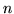

LBUILD is invoked by typing the command line
LBuild [options] wordmap outfile [mult] gramfile .. [mult] gramfile ..
The given word map file is loaded and then the set of named gram files are merged to form a single sorted stream of -grams. Any -grams containing ids not in the word map are ignored. The list of input gram files can be interspersed with multipliers. These are floating-point format numbers which must begin with a plus or minus character (e.g. +1.0, -0.5, etc.). The effect of a multiplier x is to scale the -gram counts in the following gram files by the factor x. A multiplier stays in effect until it is redefined. The output to outfile is a back-off -gram language model file in the specified file format.
See the LPCALC options in section 18.1 for details on changing the discounting type from the default of Turing-Good, as well as other configuration file options.
The allowable options to LBUILD are as follows